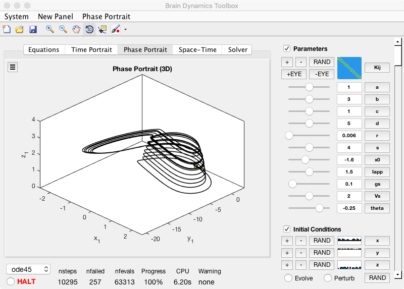

The code for the book:
Handbook for the Brain Dynamics Toolbox: Version 2018a
by Stewart Heitmann, Michael Breakspear
http://www.bdtoolbox.org/
Requires MATLAB and is documented and available for download from the above link
Usage:
------
After signing up for the newsletter you can download and extract the free toolbox from the above link.
The first chapter from the book is also available for free.
Following the advice in the documentation, On the MATLAB command prompt, cd to the folder that the archive was expanded into and execute the following commands:
cd bdtoolkit-2018a/
addpath(pwd)
cd models/
addpath(pwd)
savepath
load HindmarshRose.mat sys
bdGUI(sys);
That should create a window which you can select Phase - > Portrait -> 3D to generate this image similar to one of the plots in Fig 1.1 in the first chapter:
